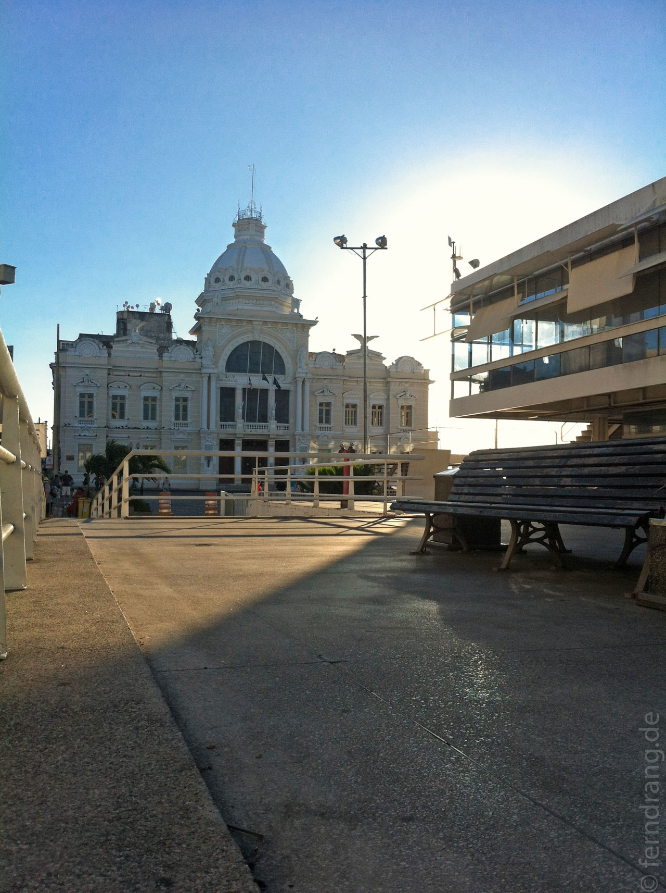

Salvador hat sich ein weiteres mal als Zwischenstopp in die Route geschlichen. Wir haben für den Aufenthalt großzügig einen halben Tag bemessen - die optimale Dauer für einen Rundgang durch die historische Altstadt. Auf dem Hügel über dem Hafen freuen sich die Orthopäden über das unwegsame Kopfsteinpflaster. Die paar interessanten Gassen bersten vor Kirchen, Konventen und anderen Kolonialbauten. Leider haben wir einen Feiertag erwischt, weshalb sehr wenig los war. Sogar der berühmte Aufzug in die Unterstadt lief nicht.
Da hier alle ein irres Aufhebens um Sicherheit machen, steht an jeder Ecke ein Polizist. Man nimmt ein Taxi, um auf die andere Straßenseite zu kommen und unser eigenwilliger, deutscher Wirt hat uns die Chancen für einen Überfall mit unserer "auffälligsten" Kamera auf 100 Prozent ausgerechnet. Wir haben dann Undercover-Tourismus mit versteckter Kamera gemacht und sind dem Fluch entgangen. Trotzdem macht es so keinen Spaß eine Stadt zu erkunden.
Am nächsten Morgen sind wir früh los, um nach Sao Luis zu fliegen. Der Reiseführer hat von einer ähnlich schönen Altstadt wie Salvador geschwärmt, was schlichtweg gelogen ist. Zwar sind hier viele Häuser mit alten Kacheln gegen die salzige Brise geschützt, den Stadtrundgang haben wir aber nach einer knappen Stunde enttäuscht beendet.
Unsere Pousada Portas das Amazonia hat uns etwas besänftigt. Das Hotel ist in einem alten Kolonialbau mit 5m hohen Decken um einen schattigen Innenhof arrangiert.